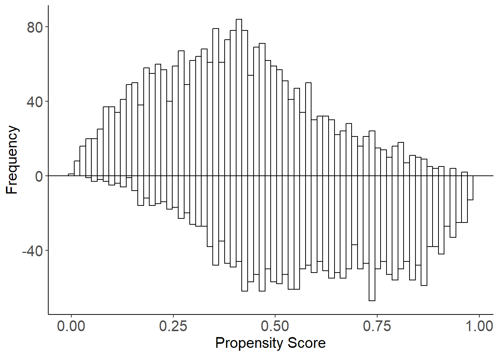
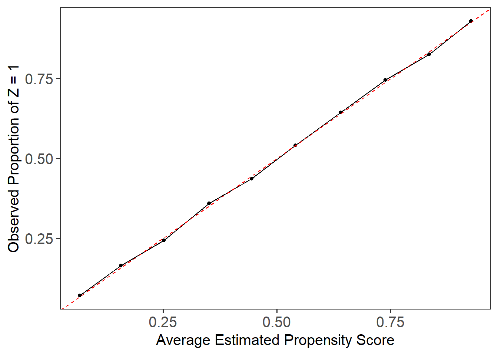

This example demonstrates how to apply LBCNet on a simulated dataset inspired by the misspecified propensity score model from Kang & Schafer (2007). Our goal is to estimate the mean outcome, assess covariate balance, and evaluate propensity score calibration using local system Python.
Simulate the Data
We simulate data where the true propensity score model differs from the one used in the analysis, representing a challenging scenario for causal inference (misspecified propensity score model).
# Load required packageslibrary(MASS)# Set seed for reproducibilityset.seed(123456)# Define sample sizen <-5000# Generate true covariates from a multivariate normal distributionZ <- MASS::mvrnorm(n, mu =rep(0, 4), Sigma =diag(4))# Generate true propensity scoresprop <-1/ (1+exp(Z[,1] -0.5* Z[,2] +0.25* Z[,3] +0.1* Z[,4]))# Assign treatment based on propensity scoresTr <-rbinom(n, 1, prop)# Generate continuous outcome (correct model)Y <-210+27.4* Z[,1] +13.7* Z[,2] +13.7* Z[,3] +13.7* Z[,4] +rnorm(n)# Create a set of covariates for estimation (misspecified model)X <-cbind(exp(Z[,1] /2), Z[,2] * (1+exp(Z[,1]))^(-1) +10, ((Z[,1] * Z[,3]) /25+0.6)^3, (Z[,2] + Z[,4] +20)^2)# Combine data into a data framedata <-data.frame(Y, Tr, X)colnames(data) <-c("Y", "Tr", "X1", "X2", "X3", "X4")# Quick look at the datahead(data)
Set Up Python Environment Using a Virtual Environment
In this example, we set up LBCNet to run in a Python virtual environment called "r-lbcnet".
Using a virtual environment ensures the Python packages needed for LBCNet are installed and isolated from other projects.
library(LBCNet)# Set up LBCNet to use a virtual environment named "r-lbcnet"setup_lbcnet(envname ="r-lbcnet", # Name of the virtual environmentcreate_if_missing =TRUE# Set to TRUE if you want LBCNet to create the environment automatically if it doesn't exist)
Here, envname = "r-lbcnet" specifies the name of the Python virtual environment and create_if_missing = FALSE means LBCNet will automatically create a new virtual environment and install the necessary Python dependencies (like torch) if it doesn’t already exist.
Fit the LBC-Net Model
Estimate propensity scores using LBC-Net with the covariates X1, X2, X3, X4.
# Fit the LBC-Net modellbc_net.fit <-lbc_net(data = data,formula = Tr ~ X1 + X2 + X3 + X4)
Python is already set up. Skipping `setup_lbcnet()`.
Calculating propensity scores for ck/h calculation...
✅ Stopping early at epoch 1200 (rolling average max LSD < 2.0%)
✅ LBC-Net training completed successfully.
# Print the model fit objectprint(lbc_net.fit)
Call: Tr ~ X1 + X2 + X3 + X4
Sample Size: 5000 | Treated: 2466 | Control: 2534
Estimand: ATE (Average Treatment Effect)
--- Training Results ---
Final Loss Value: 1.9297
Max LSD: 1.06%
Mean LSD: 0.37%
--- Model Hyperparameters ---
Hidden Layers: 1 | Hidden Units: 100
VAE Learning Rate: 0.010 | LBC-Net Learning Rate: 0.050
Weight Decay: 1.0e-05 | Balance Lambda: 1.00
Kernel: "gaussian"
--- Stopping Criteria ---
LSD Threshold: 2.00% | Rolling Window: 5
Max Training Epochs: 5000
Use summary(object) for a full model summary.
Evaluate Propensity Score Estimation Performance
Summarize the model and visualize the estimated propensity scores.
# Summarize the fitted model with outcome Ysummary(lbc_net.fit, Y = data$Y, type ="Y")
# Mirror histogram for covariate distribution balancemirror_hist(lbc_net.fit)

# Calibration plot to assess model calibrationplot_calib(lbc_net.fit)

Evaluate Covariate Balance
# Compute local balance diagnosticslsd.fit <-lsd(lbc_net.fit)# Print and summarize local balanceprint(lsd.fit)
Sample Size: 5000 | Treated: 2466 | Control: 2534
Estimand: ATE (Average Treatment Effect)
--- Local Balance (LSD) % ---
Max LSD: 1.0641
Mean LSD: 0.366
Kernel: "gaussian"
Use summary(object) for a full model summary.
summary(lsd.fit)
Call:
function (x, ...) UseMethod("formula")
Sample Size: 5000 | Number of Covariates: 4
Treated: 2466 | Control: 2534
Estimand: ATE (Average Treatment Effect)
--- Local Balance (LSD) % ---
Max LSD: 1.0641
Mean LSD: 0.3660
Covariates LSD %
-------------
X1 0.2592
X2 0.4479
X3 0.3110
X4 0.4461